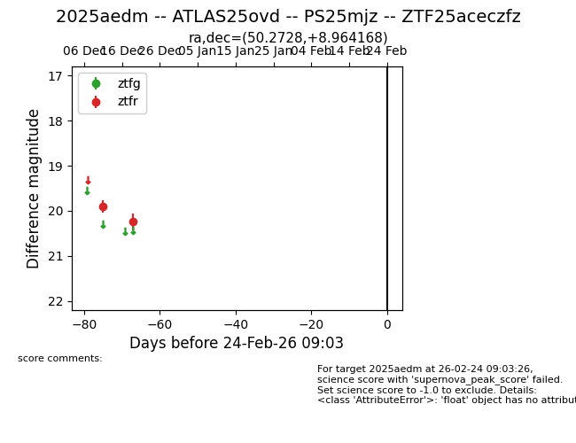
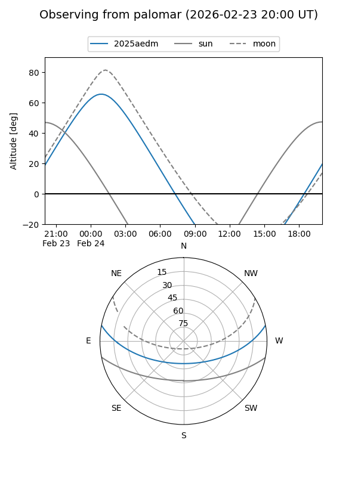

2025aedm
Target 2025aedm at 2025-12-31 16:59
Aliases and brokers:
FINK:
Lasair:
ALeRCE:
TNS:
YSE:
alt names
ZTF25aceczfz (ztf,fink_ztf)
2025aedm (tns,yse)
ATLAS25ovd (atlas)
Coordinates:
equatorial (ra, dec) = 50.2728,+8.96417
equatorial (HMS+DMS) = 03:21:05.47,+08:57:51.00
galactic (l, b) = (173.3348,-38.84458)
Flags:
Photometry:
last ztfr=20.25
2 ztfr detections
Lightcurve

Visibility


Additional plots